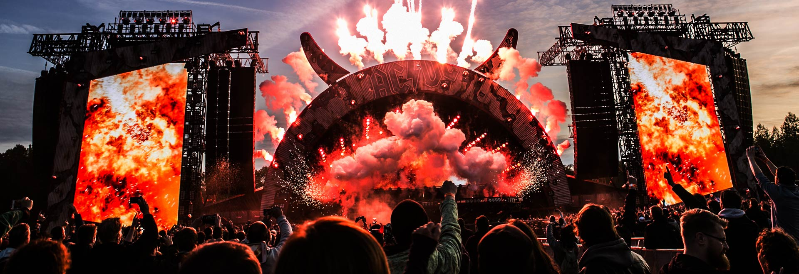

After releasing their 2012 full-length debut Night Visions (featuring the Grammy Award-winning single “Radioactive”), Imagine Dragons spent nearly two years bringing their passionately inventive brand of alt-rock to arenas around the world. To deal with the chaos of a touring schedule that included 130 headline dates and 50 festivals across the globe, the Las Vegas-based quartet threw themselves into creating material for their next album. “So many things were changing for us so quickly, the only way to feel some kind of stability was to keep writing,” says frontman Dan Reynolds, who founded Imagine Dragons with guitarist Wayne Sermon, bassist Ben McKee, and drummer Daniel Platzman. “Going up to my hotel room to work on new songs became something I looked forward to every night on tour,” Reynolds adds. “There were definitely a few times when the person next door’s banging on the wall because it’s 4 a.m. and they’re trying to sleep and I’m in there belting out some song I just wrote.”
With Smoke + Mirrors, Imagine Dragons use the frenetic energy of life on the road to infuse their music with both raw tension and intense vulnerability. As on Night Visions—which prompted Imagine Dragons to rack up more than 3.9 million album sales and 24 million track sales worldwide—the band works with sharply crafted beats and grooves to dream up rhythm-driven rock music that’s artful yet visceral. Also revealing the band’s dedication to keeping it homespun, Smoke + Mirrors marks the first release recorded in their new self-built home studio. “Working in a rented studio usually ends up with the creative process being somewhat rushed, so this was the best way to make something at our own pace,” explains Reynolds.
In each sprawling and hook-laced song on Smoke + Mirrors—including the brooding but anthemic lead single “Bet My Life” and the soulful, tribal-drumbeat-powered title track—Imagine Dragons reveal the pain and exhilaration that comes with soul-searching and transcendence. “One of the goals in making this album was to capture the extremes of the past couple years,” says Reynolds. “There were times on the road where I was on the highest high, like after playing in Brazil in front of 80,000 people, and there were other times when I was really feeling how difficult and lonely it was to be away from my family for so long.” To lay that emotion bare, Imagine Dragons stripped away some studio flourishes and embraced a sense of brilliant imperfection in producing Smoke + Mirrors. “A lot of the vocals on the album were ones that I recorded into my laptop or a cheap USB mike in my hotel room, because those were the takes that really had the spirit of the moment when the song was written,” Reynolds points out. At the same time, Imagine Dragons expanded their sound by using instruments collected in their travels, adding even more texture and depth to the band’s already-intricate rhythms and melodies.
Live performance has always been essential to Imagine Dragons, who formed in 2009 and quickly earned a grassroots following by touring extensively and independently releasing a series of EPs. After signing to KIDinaKORNER/Interscope Records, the band made their major-label debut with the release of Continued Silence (a 2012 EP featuring the breakthrough single “It’s Time”). Once Night Visions arrived later that same year, Imagine Dragons soon found themselves on a skyward trajectory that saw the album climbing to #2 on the Billboard 200 chart, as well as the group taking home the Best Rock Performance for “Radioactive” at the 2014 Grammy Awards.
Despite the whirlwind of the past few years, the drive to create sonically adventurous but unabashedly honest music has remained a constant for Imagine Dragons. And for Reynolds—who recalls sneaking onto his older brother’s computer at age 13 to use the recording software and sketch out songs about his early-adolescent heartache and frustrations—Smoke + Mirrors has proven his most daringly candid experience in songwriting yet. “At times it’s really scary to think about so many people hearing what I’m talking about in the lyrics on this album, but I know that for better for worse it’s completely authentic and genuine and true to who we are as a band,” says Reynolds. “And that’s the most important thing you can ever do as an artist, and also the most magical: forget about everyone and everything else for the moment, and just create whatever’s most meaningful to you.”